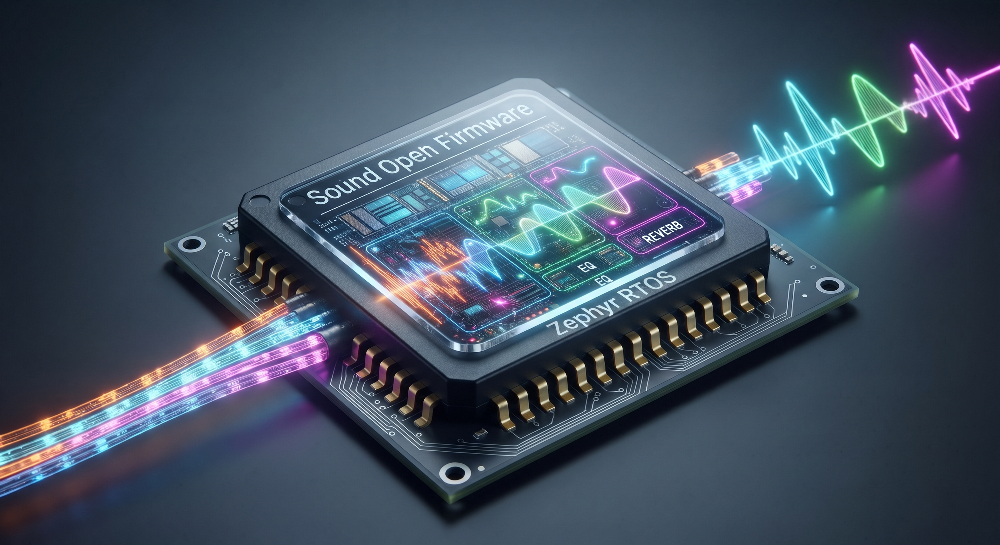

Sound Open Firmware Documentation#
Welcome to the Sound Open Firmware (SOF) technical documentation portal.
Sound Open Firmware is a permissively licensed, open-source audio Digital Signal Processing (DSP) firmware infrastructure, SDK, and real-time execution framework governed under the Linux Foundation and directed by the SOF Technical Steering Committee (TSC).
SOF provides transparent, deterministic, low-latency audio processing infrastructure for modern computing architectures ranging from embedded microcontrollers and IoT devices to multi-core client PCs and servers.


Architecture & Key Capabilities#
Sound Open Firmware delivers a unified, cross-platform audio software stack across two foundational deployment paradigms:
Host-Based Client Architecture: Where the DSP operates as an accelerator coupled to a host application processor running Linux, ChromeOS, Android, or Windows. The mainline Linux kernel driver subsystem (
sound/soc/sof/) manages firmware lifecycle, dynamic ALSA topology parsing, and aggressive power gating (D0ix runtime idle, D3 cold suspend), while real-time audio streams exchange through mailbox IPC protocols (IPC4 and IPC3) and host DMA memory windows.Hostless & Standalone Architecture: Where SOF executes autonomously on microcontrollers and embedded DSPs (such as the Espressif ESP32-P4 or PJRC Teensy 4.1 / i.MX RT1062) atop the Zephyr RTOS. Standalone topologies process audio directly between hardware peripherals (I2S/TDM, SoundWire, PDM microphones, and S/PDIF) without requiring a host OS.